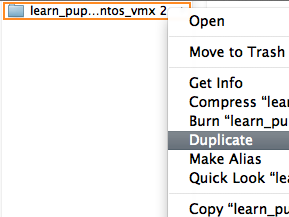
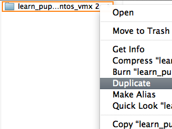
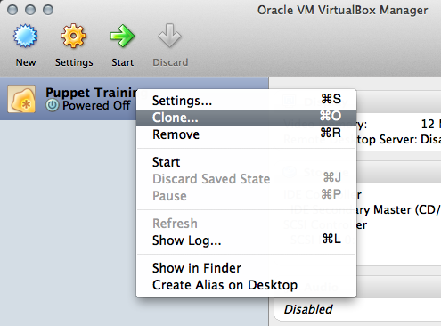
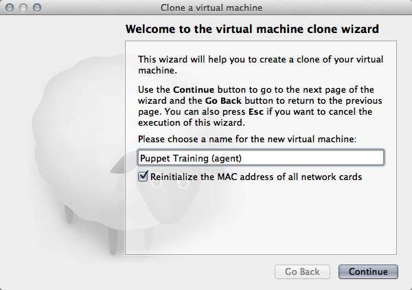
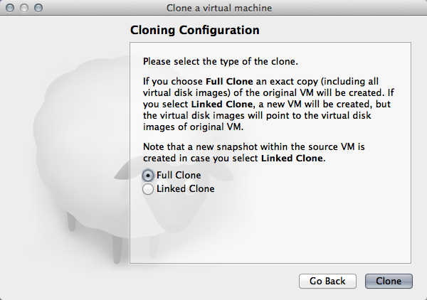

訳注：このドキュメントは以下のURLにある"Learning Puppet"を日本語訳したものです。
http://docs.puppetlabs.com/learning/agentprep.html
Learning Puppet — Preparing an Agent VM ～ Agent用VMの準備
ここからはmasterノードと１つ以上のagentノードを対象とした演習になります。このセクションのほとんどで１つ以上のノードでの操作が必要になります。ここで２つのノードを設定しましょう。そうすればこの後の章の助けになります。
Step 0: Get the Latest VM ～ 最新のVMをゲットする
最初のLerning Puppet VMを配布した時からかなり変更がありました。手順のシンプルさを保つため、システム全てがPuppet Enterprise 2.0以降で動作していると想定します。Puppet Enterpriseのバージョンは以下のコマンドラインでチェックできます：
[root@learn ~]# puppet --version
2.7.9 (Puppet Enterprise 2.0.1)
もしアップデート済でしたら以下の手順はスキップしてください。もしこれよりも古いバージョンを動かしているのでしたら以下の手順を実施してください：
Download the Latest VM ～ 最新のVMをダウンロードする
最新版のLearning Puppet VMはこちらにあります。相変わらず500MBくらいありますが、どなたでも無料でダウンロード可能です。
VMを入れ替える前に、マニフェストやモジュールを抜き出しておいてください（マニフェストやモジュールを取り出し、どこかに移して戻してすぐに使えるというのもPuppet全体の特徴です）。
Or: Upgrade PE on Your Existing VM ～ もしくは既存のPuppet EnterpriseのVMをアップグレードする
もし新しいVMを丸ごとダウンロードできないのでしたら以下のようにできます：
- 最新版のPuppet Enterpriseをダウンロードしてください。「EL 5 for i386 installer」を選択してください。おおよそ50MBあります。
- インストーラのtarballをお使いのVMにコピーし、Puppet Enterprise 2ユーザーズガイドに従ってアップグレード(英文)してください。
特にPuppet Enterprise 1.0か1.1からアップグレードするなら、単に現行版のVMをダウンロードするよりも進化しています。またプロセスを明確にするためドキュメント化を試みています。master/consoleを組み合わせたサーバのアップグレード手順に従ってください。
Step 1: Duplicate Your Existing VM ～ 既存のVMを複製する
次のステップのためにagent VMを作成する方法はいくつもありますが、一番早くて簡単な方法は、単純に既存のVMをコピーして再構成する方法です（再構成は難しいかも知れませんが、そのためのモジュールが用意されています）。
以下にVMware FusiionとVirtualBox上でのVMコピー手順を示します。
With VMware Fusion ～ VMware Fusionの場合
（メモ. VMware Workstationについて全手順は示しませんが、手順は大体同じです）
-
もしまだダウンロードしたままのVMのZIPアーカイブがあるのであれば、展開して新規のコピーを作成します。
そうでなければrootとしてログインし、
shutdown -h nowを実行してVMをシャットダウンします。システムが停止したら、フォルダかVMXファイルを含むフォルダかバンドルを選択します。Virtual Machineライブラリウィンドウでエントリを右クリックして“Show in Finder”を選択し、ディレクトリ全体を複製することができます。 
 -
複製したファイル（再度展開した、もしくは既存を複製したかどうかは問わず）はVMXファイルを含んでいますので、これをFusionのVirtual Machineライブラリウィンドウ上にドラッグ＆ドロップします。もしウィンドウが表示されていなければ、Fusionの“Window”メニューから表示できます。VMのメモリ設定を変更するため、VMを自動起動しないことが重要です。（起動してしまったとしても、後からいつでもメモリ容量を変更できます）。
-
FusionにVMが登録されているのでしたら、エントリを右クリックすることでライブラリウィンドウを開けるので、そこで“Setting”メニューを選択して消費するメモリ量を変更できます（設定ウィンドウの“Processors & RAM”セクションを使用してください）。オリジナル(puppet Master)のVMは少なくとも512MBのメモリを必要としますが、Agentなら256MBまで安全に落とせます。
ネットワークの設定はデフォルトでNATモードになっていますが変更すべきではありません。これはホストのネットワーク環境を利用してVMがインターネットやホスト、VM同士でのアクセス可能にします。もし他のネットワークにあるノードにVMがアクセスする必要があるのでしたら、ネットワークはブリッジモードにしてください。
-
VMが最初に起動した際にはFusionが移動するかコピーするか尋ねてくるので、コピーを選択してください。
With VirtualBox ～ VirtualBoxの場合
-
もしオリジナルのOVFファイルがまだあるなら、VirtualBoxに新規VMとして再インポートできます。
そうでなければrootとしてログインし、
shutdown -h nowを実行してVMをシャットダウンします。システムが停止したら、VirtualBox Managerウィンドウ上のVMエントリを右クリックし、“Clone”を選択してください。ウィザードが表示されます。
-
最初のダイアログではVMにつける新しい名前を選択します。“Reinitialize the MAC address of all network cards”のチェックボックスにチェックがあることを確認してください。

-
次のダイアログでは“Full Clone”を選択します。

-
-
VMの準備ができたら、ネットワークアダプタの設定を“Bridged Adapter”モードにします。そうしないとPuppet Masterと通信ができないかも知れません。（“bridged mode”の代わりに2つのNICを持たせる設定も可能ですが、これは上級者向けなので多くのユーザにとってはすべきでない設定です）。
-
“System”設定をクリックし、メモリ容量をVMが消費している所まで下げます。Agentノードはわずか256MBのメモリで十分でしょう。
Step 2: Reconfigure the New Node With Puppet ～ 新しいノードにPuppetを再構成する
Agent VMにこのleaningpuppetモジュールをインストールし、learningpuppet::makeagentクラスを適用します。
# wget http://docs.puppetlabs.com/learning/files/learningpuppet.tar.gz
# tar -xzf learningpuppet.tar.gz
# mv learningpuppet /etc/puppetlabs/puppet/modules/
# puppet apply -e "class {'learningpuppet::makeagent':}"
もしクラスにnewname属性を指定しなければ、デフォルトでagent1を希望された事になります。
Step 3: Make Sure the VMs Can Communicate ～ VM同士が通信できることを確認する
Puppetが正しく動作するためには２つのVMが以下を満たさなくてはなりません：
- VM同士がIPアドレスでアクセスできること
- masterノードに名前でアクセスできること
- VMのファイアウォールがオフになっていること
- 時計が同期していること
Ensure the VMs Can Reach Each Other by IP ～ VM同士がIPアドレスでアクセスできるようにする
VMware Fusionの場合
VMはeth0のIPアドレスを介して通信します。それぞれのシステムでfacter ipaddress_eth0を実行して確認し、他のVMのIPアドレスに対してpingしてみます。
もしVMが通信不能であれば、それぞれのVMの設定を見直してください：
- ネットワーキングモードはNATかBridgeのどちらかにします。
- 両方のVMは同じネットワーキングモードでなければなりません。
VirtualBoxの場合
もし両方のVMが単一のNICを持っていてブリッジモード（推奨）で動作しているなら、VM間は各々のeth0のIPアドレスを使用して通信します。facterを動作させて各々のfacter ipaddress_eth0を取得できたら、他のVMのIPアドレスに対してpingしてみましょう。
もしVMで２つのNICを使うなら設定を確認してください。VMは“Host Only”モードに設定されたアダプタを介して通信します。facter ipaddress_<ADAPTER>でIPアドレスが解ります。
Ensure the VMs Can Reach the Master by Name ～ VMがmasterノードに名前でアクセスできるようにする
双方のVMの/etc/hostsファイルに以下の行を記述してください：
172.16.158.151 learn.localdomain learn puppet.localdomain puppet # This host is required for Puppet's name resolution to work correctly.
IPアドレスは前のステップで取得したmasterノードのIPアドレスです。
修正が終わったら、双方のVMがFQDNとエイリアスの両方でpingできることを確認します。
[root@agent1]# ping learn.localdomain
[root@agent1]# ping puppet
もし動作しなければ/etc/hostsファイルで重複している定義がないか確認します。masterノードのホスト名が記述された行は唯一でなければなりません。もし/etc/hostsの設定に誤りがなければ、DNSキャッシュをクリアしてみてください。
# nscd --invalidate=hosts
Ensure the Firewalls are Down ～ ファイアウォールを止める
VMを公開する際にiptablesはオフにしてありますが、オフであることを確認するのは意味があります：
# service iptables status
Firewall is stopped.
（実際の環境ではファイアウォールを無効にするのではなくPuppetに関するルールを追加しましょう）
Ensure Both VMs Know the Time ～ VMの時刻を同期させる
date -uを双方のVMで実行し、出力結果を比較してください。時間差はおおよそ１分以内とすべきです。
Next ～ 次に
これでVMを使う準備は整いました。このままagent/masterのワークフローを読んでください。